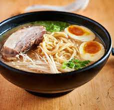

Ramen Recipe

Tonkotsu Ramen
Tonkotsu is a pork based ramen. The key part of the bowl is of course, the rich, thick, deep broth. It also includes the pork chashu, the sliced pork belly.
The next key part of the dish are the noodles. You can use straight or wavy noodles with varying degrees of thickness. The important part is that they are al dente and do a good job of soaking up all the broth.
Last but not least, the traditional Ramen toppings such as a soft-boiled egg, aka ajitama, green onion, and Enoki mushrooms.
Ingredients
- Pork belly
- Noodles
- Broth base
- 1 egg
- Scallion
- Enoki mushrooms
- Sesame seeds
Steps
- Mix the broth base with water.
- Slice the pork belly.
- Boil water and add the noodles until cooked al dente.
- Soft boil one egg and let sit after.
- Put the broth into a bowl.
- Add noodles into broth. Optionally fold the noodles for a more pleasing aesthetic.
- Place the pork belly on top of the noodles.
- Slice the egg in half long ways and place on the noodles.
- Add scallion, mushrooms and sprinkle on the sesame seeds.
- Serve with chopsticks, a soup spoon and enjoy.